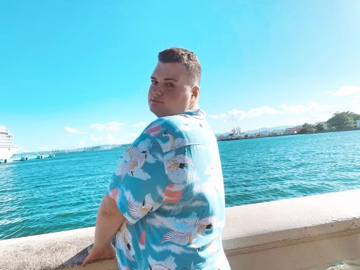

Entertainment Journalist
Write biweekly articles in the Music and Arts section of the publication. Every other Monday we have a Zoom meeting to discuss pitches from each section editor and the writers. Wednesday we have to pick an article by midnight and we have two weeks to complete the article.
I write weekly articles for the music section of the online publication. Also, I conduct research discovering how to contact artists (via their managers, booking agents, etc). Thirdly, I attend weekly meetings on Zoom in order to discuss pitches and ensure proficiency of articles selected for the publication.
Every Summer from 2021 I would work for the day camp as the head counselor. My job was to ensure the safety of children ranging from 5-8. I would conduct “buddy checks” after every activity to make sure we have everyone. When they had an injury or issues, I would bring them inside to help them.